qplot plotting options
2019-05-10
qplot-options.RmdIntroduction
This document outlines all of the plotting options in agg_qplot and how to use them. Examples are included of output, along with explanations.
A word of warning:agg_qplot has many features, despite being for quick plots. But, if you’re graph is complex, you should use arphitgg. It’s much easier to use (no lists of lists) and much easier to read the code.
Data and types of graphs
The most important input to arphit is data.
Data can be a tibble, a data.frame or a ts. (For more details on the ts class see [https://stat.ethz.ch/R-manual/R-devel/library/stats/html/ts.html].)
Please note, unless otherwise specified, the examples in this vignette use the following randomly constructed time series:
data <- ts(data.frame(x1 = rnorm(12),
x2 = rnorm(12),
x3 = rnorm(12, sd = 10),
x4 = rnorm(12, sd = 5)),
start = c(2000,1),
frequency = 4)Specifying data
The data is the first argument to an agg_qplot call. Calling agg_qplot is as simple as:
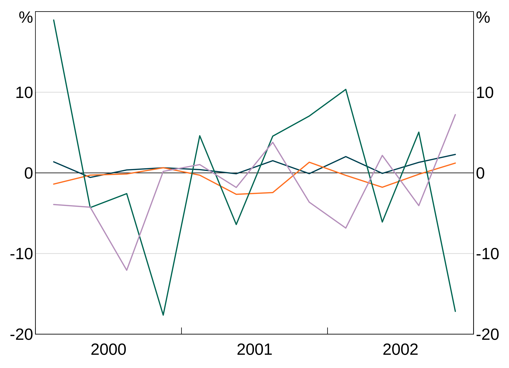
Types of graphs and data
Time series
Giving arphit a ts, xts or zoo object will automatically produce a time series plot:
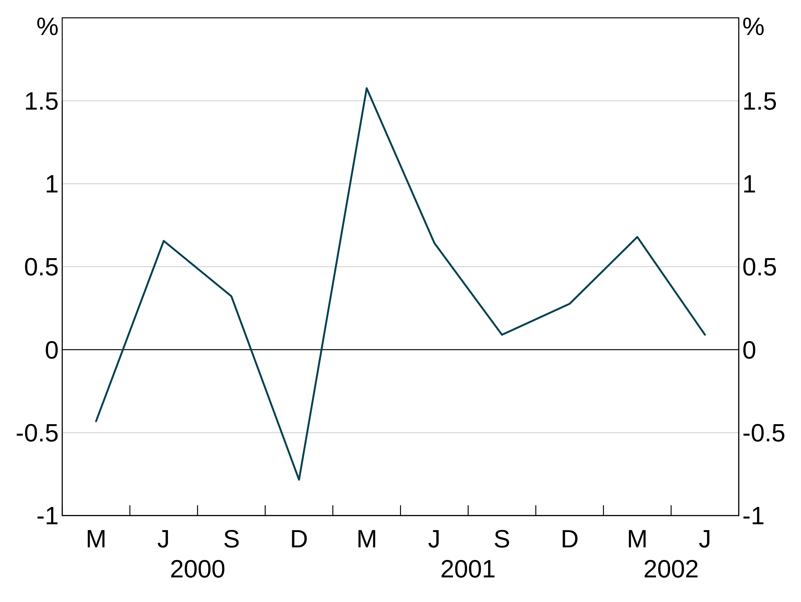
Alternatively if you have a data.frame or tibble with a date column, specify that as the x-variable:
mydataframe <- data.frame(date = seq.Date(from = as.Date("2000-01-01"),
length.out = 10, by = "quarter"),
x1 = rnorm(10))
agg_qplot(mydataframe, x = "date")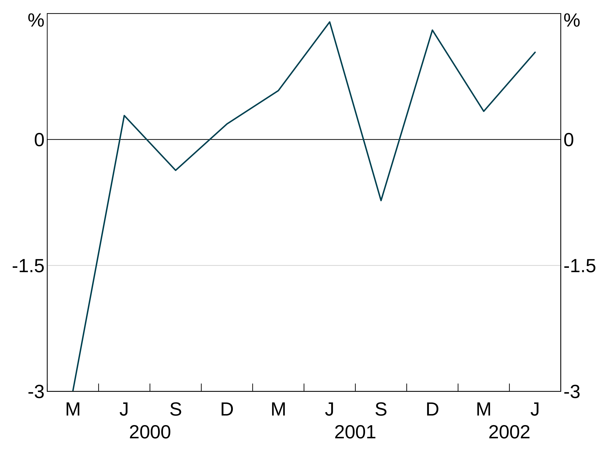
Undated and scatter graphs
Categorical data can be plotted by giving arphit the x variable that corresponds to the categories. For instance:
categoricaldata <- data.frame(categoryname = letters[1:5], value = rnorm(5))
agg_qplot(categoricaldata, x = "categoryname")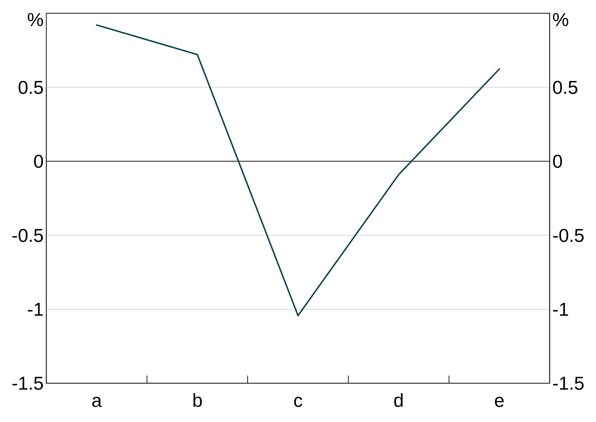
This also works if you have numerical categories (but they have to be evenly spaced, otherwise arphit will assume you want a scatter graph.
Scatter plots work exactly the same. arphit will figure out if your x data are not categorical and plot a scatter graph instead:
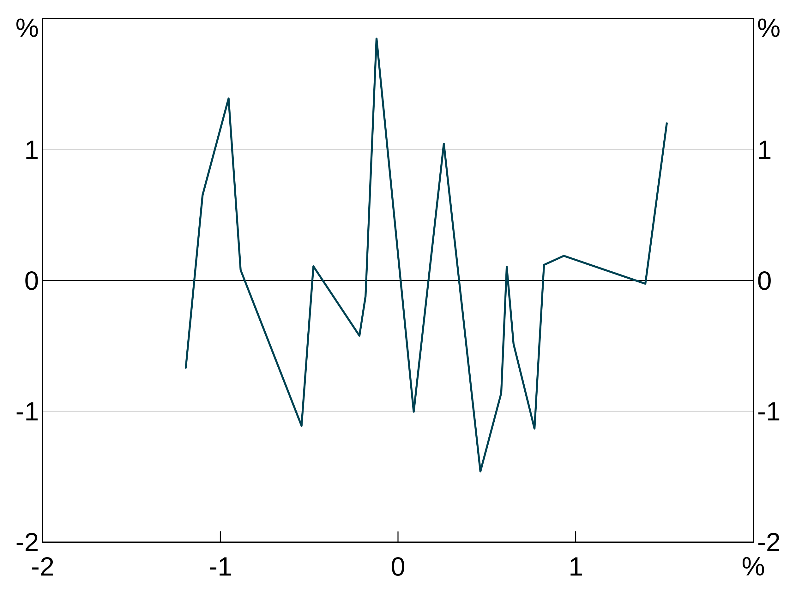
Only simple scatter plots are supported. You can specify only one x variable (but you can have multiple y variables).
Bar graphs
You can make any of your series display as bars instead of a line using the bar argument. This is simply a vector of series that should be bars. If you do not pass this argument (or pass in an empty bar argument, all will be plotted as series).
This example plots x1 as a line on the left axis, x3 as a line on the right axis and x2 as bars on the left axis:
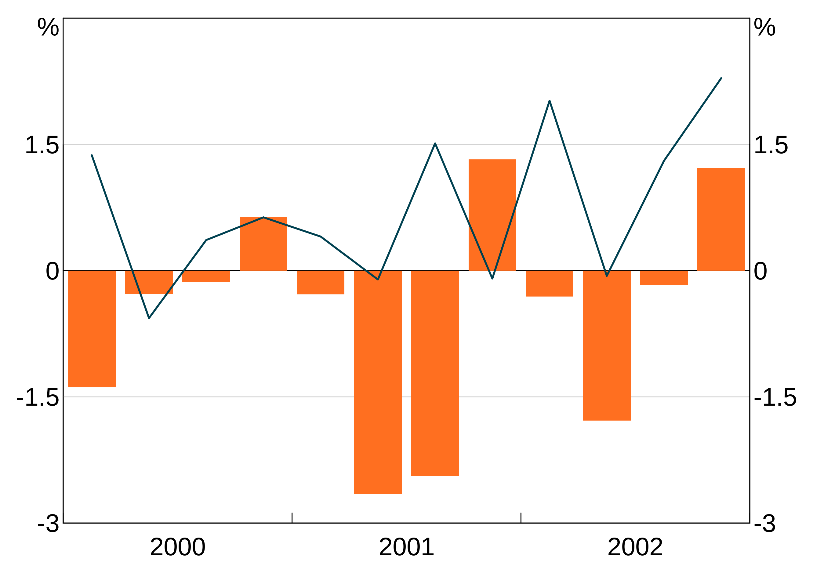
Alternatively, if you want all series to be bars, just set bars = TRUE. This is equivalent to passing in a vector with all series names.
Stacked bars
If you have multiple bar series, they will automatically be stacked. This example plots x1 and x2 as bars.
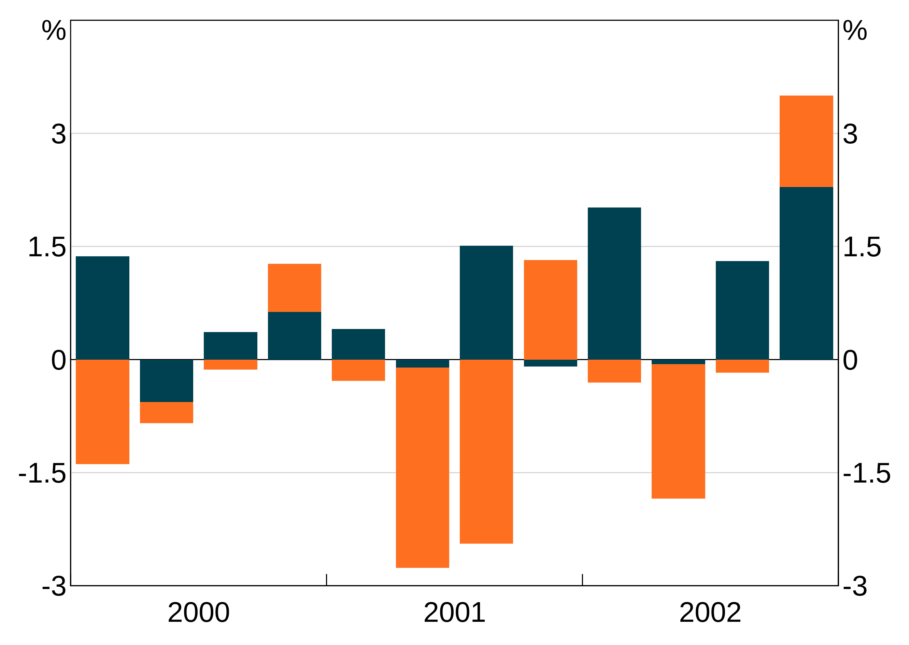
NB: The automatic y-axis scale will often be wrong with stacked bar charts. You may need to manually overrule it. See the section on axis limits below.
If you want the bars to be clustered instead, pass in bar.stacked = FALSE.
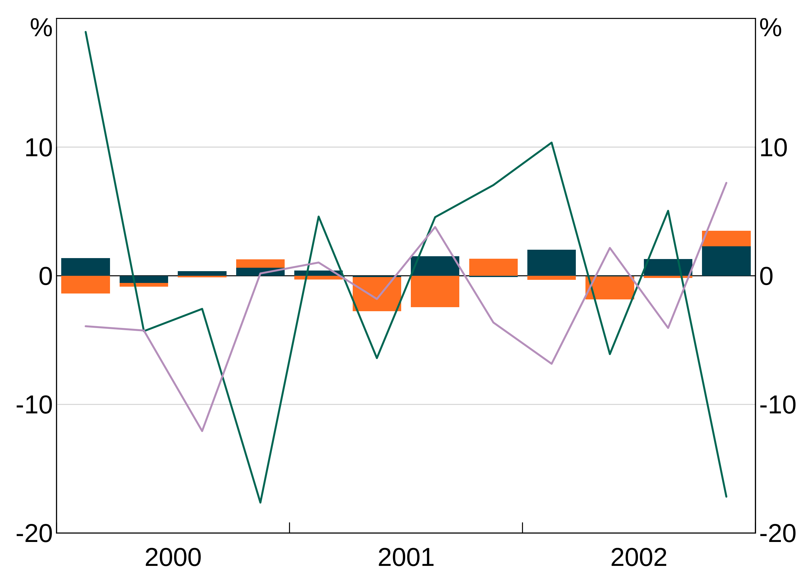
Title and subtitle
The graph title and subtitle are set with the title and subtitle arguments respectively. These are optional, and by default are blank (= NULL).

arphit will attempt to insert line breaks as necessary, but may not be smart enough in all cases. You can insert linebreaks yourself as necessary by using “\n”.
agg_qplot(data, title = "Here is a very very very long title that arphit will automatically put a break in", subtitle = "And a subtitle\nwith a break too")
Footnotes and sources

Y axis units
By default, arphit sets the y axis units to %. You can set your own by passing in a string for the units:
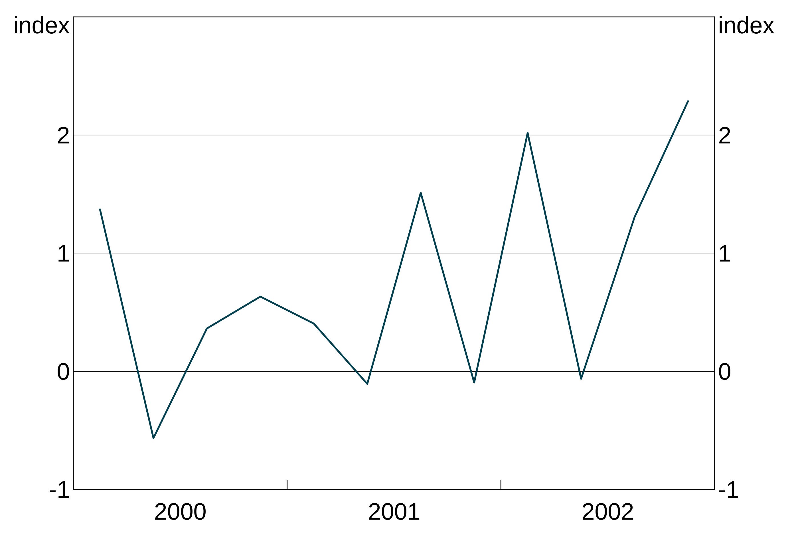
Line, bar and marker options
There are a number of fine-grained options for controlling the look of series. Each follows the same syntax, so examples for just a few are given.
Controlling these attributes is done using a list with keys equal to series names and values equal to whatever attribute value is relevant. If a series is not included in the list, a sensible default value is given.
Syntax and how to pass in values
This example gives an explicit colour to series x2 and x4, but lets arphit use default values for series x1 and x3.
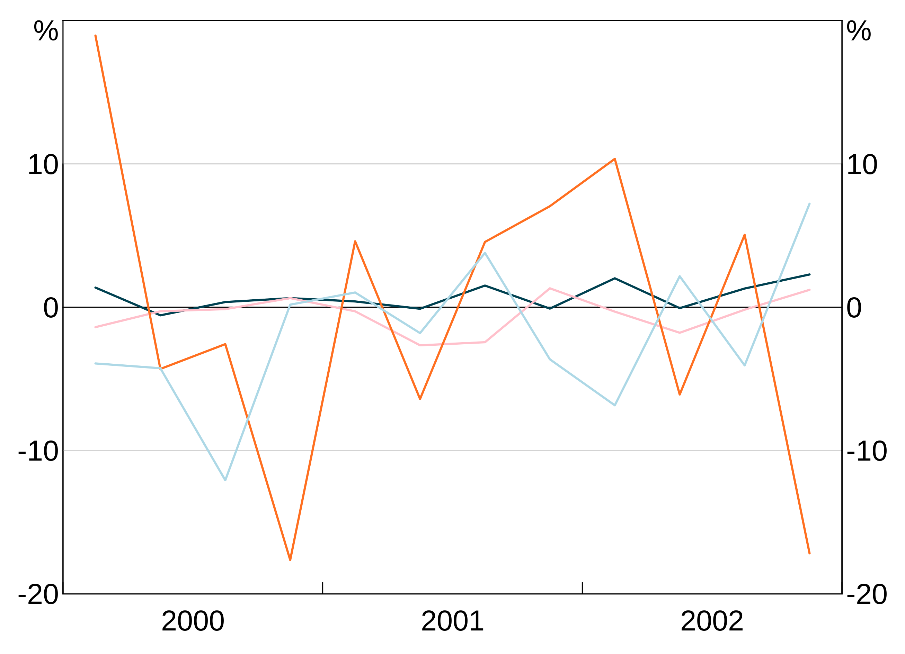
Alternatively, if you want to apply an attribute to all series, you can skip the list and just pass in the value.
For instance, this example sets all series to use pch = 19, which gives solid dots as markers.
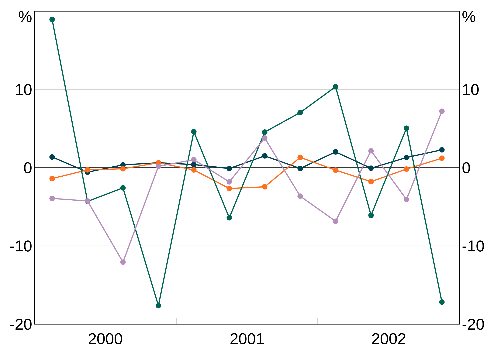
Line colour
col controls the colour of your series. If a colour is not specified for a series, arphit cycles through default colours.
The colour palette can be accessed using RBA["Green1"] etc. For instance:
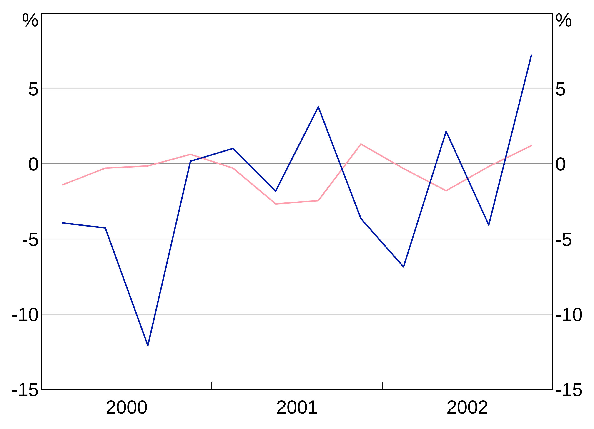
To see the full list of availble colours type vignette("rba-colours", package = "arphit").
Alternatively, you can use any colour that R recognises.
Line type
lty allows you to control the line type - e.g. add dashing. These directly follow the R options.
Axis limits
Y axis
arphit will automatically guess axes for each panel. However, it is not smart enough to sensibly line up axes across panels (e.g. if you have left and right axes). And stacked bar graphs will confuse it.
Y-limits are controlled by three variables: a minimum, a maximum, and the number of steps to include. These are passed as a list with min, max and nsteps keys - e.g. list(min = -10,max = 10, nsteps = 5). Y-limits can be set for each panel using a list with entries for each panel, or can be applied uniformly to all panels.
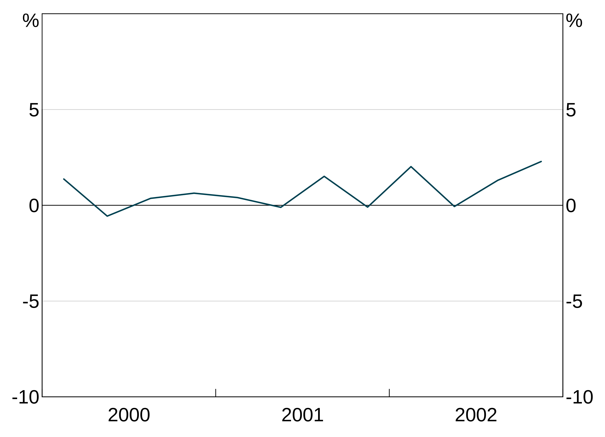
X axis
X-limits are controlled similar to y-limits. However, only a minimum and maximum is required. For time series graphs, you can use part years if desired by adding decimal places (e.g. 2000.5). You set the x axis with the argument xlim = c(minimum,maximum).
Fine-grained control of x-ticks is not currently possible; only the limits can be set, the ticks are determined automatically.
Adding a legend
You can add a legend to your graph by setting legend = TRUE. You can specify how many columns to have with lengend.ncol, but arphit will automatically guess otherwise.
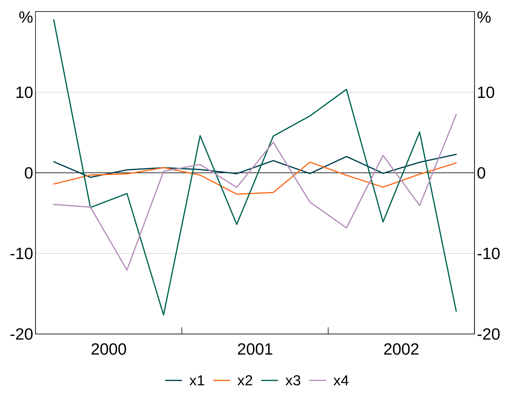
arphit will ignore duplicate series in multiple panels (i.e. it will only put in one legend entry).
Saving your graph
By default, arphit uses R’s default graphics device (dev.new()). This is only marginally useful, because you’ll probably want to include your graphs in word etc.
You can export your files automatically by using the filename argument. This will draw your graph straight to that file instead of displaying it.
There are three supported file extensions: PNG, EMF, SVG and PDF. Simply include the relevant extension (lower case only) in the filename and arphit will figure it out.
agg_qplot(data, filename = "my_filename.png")
agg_qplot(data, filename = "my_filename.emf")
agg_qplot(data, filename = "my_filename.svg")
agg_qplot(data, filename = "my_filename.pdf")You can also use the newer EMFplus format by using extention .emf+. This will still write an emf file, but it is encoded as the newer EMF+ format.
A note about EMF files
EMF files are problematic:
- EMF+ files do not render in paint or windows photo viewer properly, but will import fine into Word or PowerPoint (and looks fine when exported to PDF from Word).
- EMF files will not render if exported from Word to PDF; EMF+ will.
Additionally, only EMF+ files support partial transparency; EMF files do not.